Next: Bayesian Inference Up: probability Previous: Entropy
Joint Entropy
The joint entropy of two discrete random variables  and
and  is
defined as:
is
defined as:
| (171) |
| 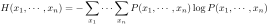 | (172) |
Conditional Entropy
The conditional entropy (equivocation) 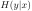 measures
the uncertainty of a random variable given the value of
another random variable , or the amount of information gained
once the outcome of is known, given the outcome of .
Let
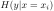 be the entropy of conditioned on 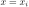:
| 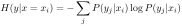 | (173) |
:
 |
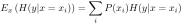 | ||
|
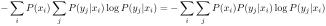 | ||
|
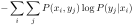 | (174) |
Theorem:
|
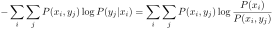 | ||
|
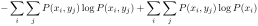 | ||
|
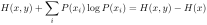 | (175) |
| 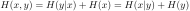 | (176) |
| 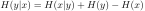 | (177) |
Mutual Information
Mutual information  measures the information shared by random
variables and , it measures how much knowing one of the two variables
reduces uncertainty of the other.
measures the information shared by random
variables and , it measures how much knowing one of the two variables
reduces uncertainty of the other.
| 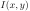 | |
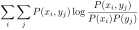 | |
|
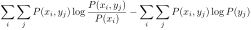 | ||
|
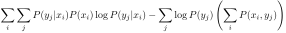 | ||
|
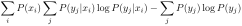 | ||
|
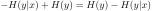 | (178) |
|
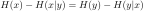 | ||
|
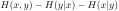 | ||
|
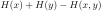 | (179) |
These relationships can be summarized in the following diagram:
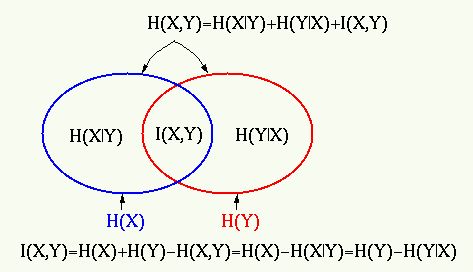
The mutual information of  random variables is defined as
random variables is defined as
| 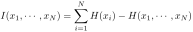 | (180) |
Cross Entropy
When the true distribution 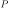 is unknown, the encoding of can
be based on another distribution 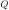 as a model that approximates
. Then the average of the total number of bits needed is called
the cross-entropy.
| 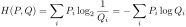 | (181) |
We can prove Gibbs' inequality. stating that the entropy 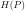 is no greater than the cross entropy 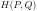:
| 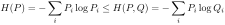 | (182) |
Proof: Based on inequality 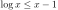, we have
| 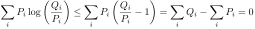 | (183) |
| (184) |
based on model distribution
always requires more bits than that based on the true distribution .
Kullback-Leibler (KL) Divergence (Relative Entropy)
The Kullback-Leibler (KL) divergence or relative entropy is defined as
the difference between the cross entropy and the entropy :
| 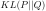 | |
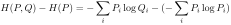 | |
|
(185) |
based on instead of , or a measure of the error of using
to approximate , in terms of the amount of information lost, due to
the inaccuracy of the model. In order to obtain the best model that
optimally approximates , we need to minimize .
In general, 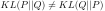, the KL divergence is not a distance metric as it is not symmetric (hence the name divergence rather than distance).
The mutual information defined above can be expressed as the following KL divergence:
| 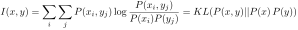 | (186) |
and are independent
of each other, i.e.,
| 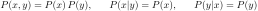 | (187) |
Consider the cross-entropy of a Gaussian and an arbitrary pdf
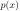 both with the same variance 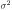:
 |
|
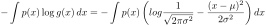 | |
|
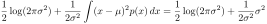 | ||
|
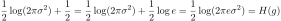 | (188) |